Przewodnik użytkownika

Hydrograf
Mapa, zlewnie, opad i odpływ — od pierwszego kliknięcia do własnych scenariuszy.
Wyniki, wygląd i funkcje mogą się jeszcze zmieniać. Liczymy na Wasze uwagi — przycisk „Zgłoś uwagę” znajdziesz na górnym pasku nad mapą.
Spis treści
Co znajdziesz w przewodniku
Pierwszy raz? Wystarczą slajdy 3–6 — po nich możesz od razu pracować z mapą. Rozdziały 01–10 opisują każdą funkcję szczegółowo (z przykładami krok po kroku na slajdach 22, 24 i 29); wracaj do nich, gdy będą potrzebne.
Na start
Czym jest Hydrograf?
Hydrograf wyznacza z NMT zlewnię wskazanego przekroju, oblicza jej parametry fizjograficzne i CN z pokrycia terenu oraz grup glebowych HSG, a dla zlewni do 250 km² — hydrogram odpływu metodą SCS-CN z opadu projektowego PMAXTP. Wszystko na mapie w przeglądarce.
Wystarczy przeglądarka — na komputerze lub telefonie. Nie trzeba znać programów do map (GIS) ani wzorów: Hydrograf liczy sam, a znak (i) przy każdej wartości wyjaśnia, co ona znaczy.
Kilka słów, które spotkasz
- Zlewnia
- Cały obszar, z którego deszcz spływa do wybranego miejsca na rzece; jej granica biegnie grzbietami wzniesień.
- Ciek
- Rzeka, potok lub rów, którym płynie woda.
- NMT
- Numeryczny model terenu — cyfrowa mapa wysokości, z której Hydrograf odczytuje, dokąd spływa woda.
- Linie spływu
- Drogi, którymi woda spływa po terenie, wyliczone z NMT; to na nich wskazuje się miejsce.
- Opad projektowy
- Umowny silny deszcz, np. taki, który zdarza się średnio raz na 100 lat.
- Hydrogram
- Wykres pokazujący, jak po deszczu rośnie i opada ilość wody płynącej w cieku.
Na start
Czego się spodziewać — a czego nie
Hydrograf da Ci
Granicę na mapie, powierzchnię, wysokości i spadki terenu, udział lasów, pól, łąk i zabudowy oraz rodzaje gleb.
Ile wody i jak szybko może spłynąć do wybranego miejsca po silnym deszczu — dla zlewni do 250 km².
Wykres wysokości wzdłuż dowolnej linii narysowanej na mapie.
Hydrograf nie jest
Nie korzysta z bieżących pomiarów ani prognoz pogody — nie powie, czy rzeka wyleje jutro. Ostrzeżenia hydrologiczne wydaje IMGW-PIB.
Wyniki to szacunki z uproszczonych modeli; prawdziwy przepływ może być wyraźnie inny. Do decyzji i projektów potrzebna jest ocena specjalisty.
Mapa głębokości wody to wstępny wynik dla jednej małej zlewni. Oficjalne mapy zagrożenia powodziowego publikują Wody Polskie.
Wersja rozwojowa: wygląd, funkcje i liczby mogą się jeszcze zmieniać.
Na start
Na jakie pytania odpowiada i komu się przyda?
Przykładowe pytania
- Skąd spływa woda do tego miejsca?
- Granica zlewni na mapie.
- Jak duża jest zlewnia i jak ukształtowana?
- Powierzchnia, wysokości, spadki, kształt.
- Co pokrywa teren?
- Udział lasów, pól, łąk, zabudowy i wód oraz rodzaje gleb.
- Ile wody może spłynąć po ulewie?
- Hydrogram: największy przepływ, czas do jego wystąpienia, objętość wody.
- Jak wygląda teren wzdłuż linii?
- Profil terenu: wykres wysokości.
Kto może korzystać
Skąd pochodzi woda zasilająca potok, mokradło czy staw i jakie tereny — lasy, pola, zabudowa — ją otaczają.
Wstępnie: skąd po ulewie spływa woda w stronę dróg i zabudowy, zanim zleci się dokładne obliczenia.
Hydrologia na prawdziwych danych — bez instalowania programów.
Szybki pierwszy szacunek parametrów zlewni i odpływu przed szczegółowym projektem.
Na start
Jak zacząć — w trzech krokach
W panelu „Warstwy” (na telefonie przycisk „Warstwy” nad mapą) zaznacz „Linie spływu”. Niebieskie linie pokażą, którędy płynie woda.
Na pasku nad mapą wybierz „Wybierz zlewnię” i kliknij przy niebieskiej linii — w miejscu, dla którego chcesz poznać zlewnię.
Na mapie pojawi się granica zlewni, a w panelu „Zlewnia” — powierzchnia, wysokości, pokrycie terenu, a niżej deszcz i odpływ.
Gdzie są dane? Na razie tylko w zlewni Kaczawy — od źródeł w Górach Kaczawskich do Legnicy (ok. 792 km²), m.in. okolice Złotoryi i Świerzawy. Mapa po otwarciu sama pokazuje ten obszar; poza nim Hydrograf nie wyznaczy zlewni.
Szczegóły każdej funkcji — od slajdu 7. Coś nie działa albo masz pomysł? Przycisk „Zgłoś uwagę” na górnym pasku.
01 · Zanim zaczniesz
Obszar danych i status wyników
Dane obejmują tylko zlewnię Kaczawy powyżej punktu 51,222825° N, 16,179380° E (ok. 792 km²). Po otwarciu mapa sama pokazuje ten obszar, a warstwy kończą się na jego granicy.
Kliknięcie w trybie „Wybierz zlewnię” poza liniami spływu kończy się komunikatem „Nie znaleziono zlewni cząstkowej w tym punkcie. Kliknij w obszarze pokrytym liniami spływu.” Profil przecinający granicę danych może pokazać 0 m na odcinku bez danych; profil całkiem poza nimi może zwrócić błąd.
To wersja rozwojowa: wartości i funkcje mogą się zmieniać. Hietogram i hydrogram powstają tylko dla zlewni do 250 km². Mapa głębokości wody SFINCS to wynik wstępny, do podmiany.
Zgubiłeś obszar? Ikona ramki „Przybliż do zasięgu warstw” w panelu „Warstwy” pokazuje zasięg włączonych warstw, a gdy żadna nie jest włączona — cały obszar danych.
02 · Orientacja
Co jest na ekranie?
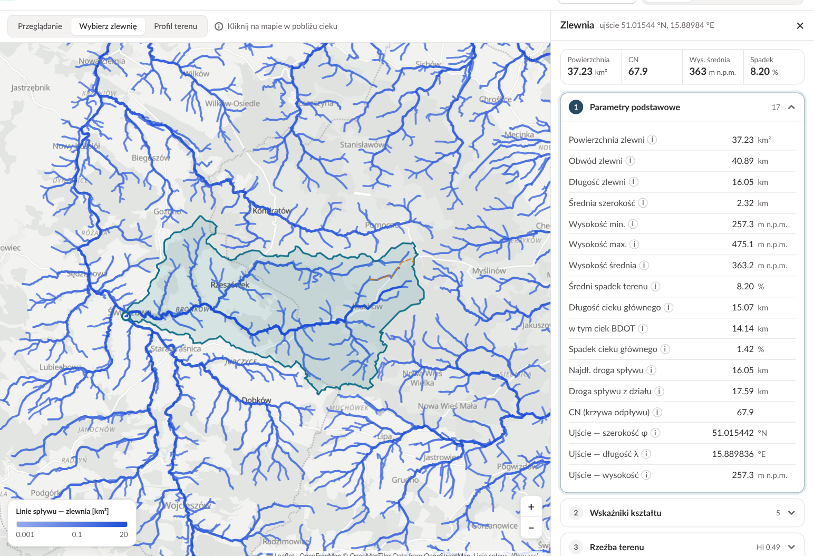
Nazwa aplikacji i kontekst („Mapa / Zlewnia … km²”), przycisk „Zgłoś uwagę”, przycisk „Instrukcja” (otwiera najpierw okno powitalne) i motyw Auto · Jasny · Ciemny.
Po lewej szyna Mapa · Logowanie i panel „Warstwy”, po prawej panel „Zlewnia” z wynikami; w trybie sieci po prawej panel „Sieć zlewni”.
Tryby pracy i podpowiedź; w trybie „Wybierz zlewnię” u góry mapy także wybór „Jedna zlewnia” · „Sieć zlewni”. Przy zwiniętym panelu pojawia się tu przycisk „Warstwy” lub „Zlewnia”.
Krawędź panelu przeciągnij, by zmienić szerokość; dwuklik przywraca domyślną, a przeglądarka zapamięta wybór. × w „Warstwach” zwija panel, × w „Zlewni” chowa go, a wynik zostaje na mapie (przycisk „Zlewnia” go przywraca); kosz w „Zlewni” czyści wynik.
02 · Orientacja
Cztery tryby pracy
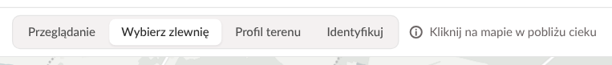
Przesuwaj mapę i przybliżaj ją kółkiem myszy lub przyciskami + i −. Kliknięcie niczego nie zaznacza; panel „Zlewnia” się zwija, wynik zostaje. W lewym dolnym rogu — współrzędne kursora (WGS84, PL-1992 lub PL-2000).
Kursor zmienia się w krzyżyk, a panel „Zlewnia” się otwiera; u góry mapy wybierasz, co wyznaczyć — domyślnie „Jedna zlewnia”. Kliknij przy linii spływu — Hydrograf wyznaczy zlewnię klikniętego odcinka (slajd 15).
Najpierw przekrój zamykający, potem punkty powyżej. Podgląd nadaje węzłom J (zbieg) lub P (ciek). „Oblicz charakterystyki” daje zlewnie, odcinki i drzewo do przekazania Hydrologowi (slajdy 27–28).
Klikaj punkty linii; profil narysuje ponowne kliknięcie ostatniego punktu, dwuklik lub „Rysuj profil”. Backspace cofa punkt, Esc porzuca linię. Wykres — w szufladzie u dołu mapy (slajd 31).
Kliknij miejsce: okienko poda współrzędne w trzech układach („Kopiuj”), wysokość, najbliższy ciek, pokrycie terenu z CN dla AMC I–III, glebę i sieć spływu, a z wynikiem SFINCS — głębokość wody.
Esc przerywa rysowanie, potem zamyka okienko punktu; gdy nic nie rysujesz, raz zwija panel „Zlewnia”, dwa razy szybko czyści wynik. W „Sieci zlewni” Esc tylko chowa panel.
03 · Warstwy
Panel „Warstwy”
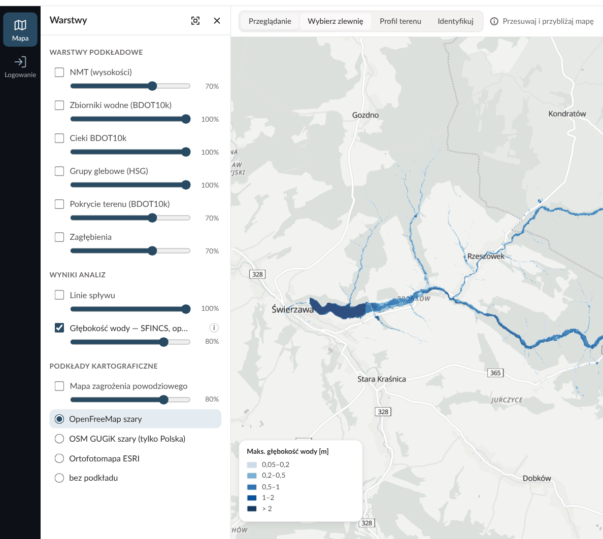
Pole wyboru włącza warstwę, suwak ustawia krycie w %. Pełną nazwę skróconego wiersza pokaże najechanie kursorem.
Warstwy podkładowe (teren, wody, gleby, pokrycie), Wyniki analiz (linie spływu, wyniki modeli) i Podkłady kartograficzne — mapa tła, zawsze jedna, oraz nakładka „Mapa zagrożenia powodziowego”.
Ikona ramki obok tytułu panelu dopasowuje widok do włączonych warstw, a gdy żadna nie jest włączona — do całego obszaru danych.
NMT, linie spływu, grupy glebowe, pokrycie terenu, wynik SFINCS i mapa zagrożenia powodziowego mają legendę w lewym dolnym rogu mapy, dopóki są włączone.
„Kanalizacja deszczowa” pojawia się na liście tylko wtedy, gdy serwer ma dane kanalizacji — dla obecnego obszaru ich nie ma.
03 · Warstwy
Co pokazują warstwy i podkłady
Warstwy podkładowe
- NMT (wysokości)
- Numeryczny model terenu GUGiK: wysokość kolorem, z cieniowaniem rzeźby; legenda podaje skalę barw w m n.p.m.
- Zbiorniki wodne (BDOT10k)
- Wody stojące z bazy topograficznej BDOT10k.
- Cieki BDOT10k
- Rzeki i potoki z bazy BDOT10k — z mapy, nie z NMT.
- Grupy glebowe (HSG)
- Hydrologiczne grupy gleb A–D, od przepuszczalnych do nieprzepuszczalnych.
- Pokrycie terenu (BDOT10k)
- Grunty orne, lasy, łąki, zabudowa, drogi, wody — z tych klas Hydrograf liczy CN.
- Zagłębienia
- Bezodpływowe obniżenia terenu wyznaczone z NMT.
Podkłady kartograficzne
- OpenFreeMap szary
- Domyślny podkład wektorowy w odcieniach szarości.
- OSM GUGiK szary (tylko Polska)
- OpenStreetMap z serwera GUGiK, w szarości.
- Ortofotomapa ESRI
- Zdjęcia lotnicze i satelitarne.
- bez podkładu
- Same warstwy na jednolitym tle.
- Mapa zagrożenia powodziowego
- Nakładka nad podkładem: głębokość wody przy powodzi od rzeki według Wód Polskich — slajd 14.
Wyniki analiz
- Linie spływu
- Sieć wyliczona z NMT — slajd 12.
- Głębokość wody — SFINCS…
- Wynik modelu hydraulicznego — slajd 13.
Cieki BDOT10k pochodzą z mapy, a linie spływu Hydrograf wylicza z NMT — to na nich wyznacza zlewnie. Porównaj obie warstwy przed wyborem punktu.
03 · Warstwy
Linie spływu i próg akumulacji spływu
Hydrograf wylicza je z NMT: woda z każdej komórki terenu spływa w dół stoku, a linia zaczyna się tam, gdzie zbiera się z dostatecznie dużej powierzchni. Na tej sieci wyznacza się zlewnie.
Im większa zlewnia powyżej danego miejsca, tym linia grubsza i ciemniejsza. Skala legendy „Linie spływu — zlewnia [km²]” biegnie od 0.001 do 20 km².
Najedź kursorem na linię: „Zlewnia” to powierzchnia w km², dalej „Rząd Strahlera” i „Długość” odcinka w km. Odcinki kończą się na połączeniach cieków.
Pole pod włączoną warstwą: 1 ha — gęstsza sieć, także bardzo małe zlewnie — albo 10 ha (domyślnie). Zlewnia jest wyznaczana na sieci z wybranym progiem.
Próg akumulacji spływu to najmniejsza powierzchnia, z której musi spływać woda, żeby powstała linia. Hydrograf podaje go w hektarach, a od 1 km² (100 ha) w km²: 1 ha = 10 000 m², 10 ha = 0,1 km².
03 · Warstwy
Głębokość wody z modelu SFINCS
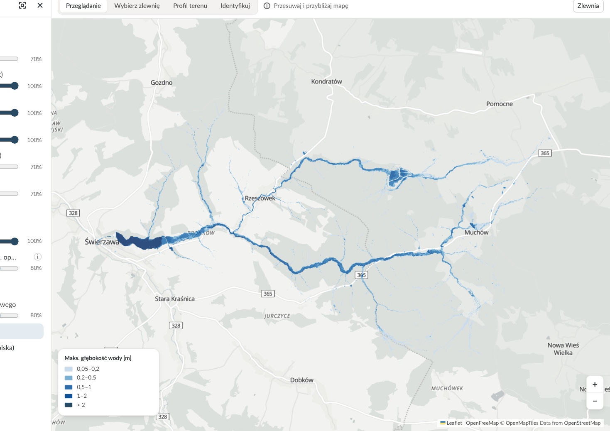
Największą głębokość wody w każdym miejscu w symulacji modelem hydraulicznym 2D SFINCS: zlewnia Kamiennika (ok. 37 km²), opad PMAXTP na 24 h przy p = 1%. To warstwa dla jednej zlewni i jednego scenariusza, nie prognoza.
„Maks. głębokość wody [m]”: 0,05–0,2 · 0,2–0,5 · 0,5–1 · 1–2 · > 2. Domyślne krycie — 80 %.
Założenia i źródła: NMT 5 m bez zmian (zapora zbiornika Świerzawa bez upustu dennego), Manning i CN z BDOT10k i HSG, bez kalibracji.
WYNIK WSTĘPNY. Ustawienia modelu, w tym próg sucho/mokro 0,05 m i niezmieniony NMT zapory, mogą wpływać na wyświetlane głębokości. Sprawdź opis (i) warstwy; wynik nie nadaje się do projektowania.
03 · Warstwy
Mapa zagrożenia powodziowego (MZP)
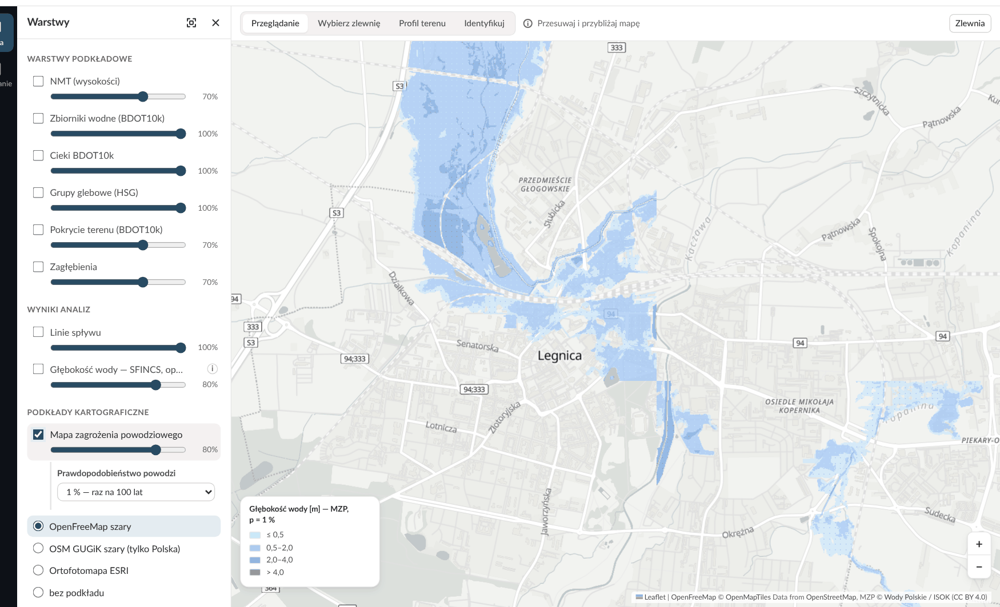
Oficjalna mapa Wód Polskich z systemu ISOK: gdzie i jak głęboko stanie woda, gdy wyleje rzeka. Hydrograf pobiera ją wprost z serwera Wód Polskich.
Szansa na taką powódź w każdym roku: 10 % — średnio raz na 10 lat, 1 % — raz na 100 lat, 0,2 % — raz na 500 lat (rzadka, najwięcej wody). „Raz na 100 lat” nie znaczy „co 100 lat” — może przyjść dwa lata z rzędu.
W „Podkładach kartograficznych” zaznacz „Mapa zagrożenia powodziowego” i wybierz prawdopodobieństwo. Mapa leży nad podkładem i NMT, ale pod wynikiem SFINCS.
Głębokości widać po przybliżeniu mapy (od skali ok. 1:50 000) i tylko przy rzekach objętych mapami Wód Polskich. Dane: Wody Polskie / ISOK, licencja CC BY 4.0.
04 · Zlewnia
Wyznacz zlewnię w trzech krokach
W panelu „Warstwy” włącz „Linie spływu” i przybliż mapę do wybranego cieku.
Włącz tryb „Wybierz zlewnię” (u góry mapy „Jedna zlewnia”) i kliknij przy linii. Ujście wypadnie na dolnym końcu klikniętego odcinka — zwykle na najbliższym połączeniu cieków poniżej.
Zlewnie cząstkowe zapalają się od ujścia w górę i pulsują, aż serwer scali granicę — przy setkach km² nawet ponad minutę. Wynik trafi do panelu „Zlewnia”.
Przy zbiegu cieków przybliż mapę do poziomu pojedynczych budynków (zoom ≥ 15) — kilka metrów decyduje, który odcinek zostanie wybrany. Potem sprawdź znacznik ujścia na mapie i współrzędne w tytule panelu.
Nowe kliknięcie od razu zastępuje poprzedni wynik. Poza obszarem danych panel pokaże „Błąd: Nie znaleziono zlewni cząstkowej w tym punkcie…”.
04 · Zlewnia
Wynik na mapie i w panelu
Na mapie
- Granica zlewni — kontur z jasnym wypełnieniem; mapa sama się do niej przybliża.
- Ujście — kółko; po najechaniu „Ujście: … m n.p.m.”.
- Ciek główny — odcinki zgodne z ciekami BDOT10k grubsze, pozostałe cieńsze i bledsze.
- Najdłuższa droga spływu — od najdalszego punktu zlewni do ujścia.
- Najdłuższa droga spływu od granicy zlewni — od najdalszego punktu na granicy zlewni do miejsca, gdzie łączy się z najdłuższą drogą spływu; tylko gdy zaczyna się w innym punkcie.
W panelu „Zlewnia”
Powierzchnia [km²], CN, Wys. średnia [m n.p.m.] i Spadek [%] — zawsze na górze panelu.
Parametry podstawowe, Wskaźniki kształtu, Rzeźba terenu, Sieć rzeczna, Pokrycie terenu, Grupy glebowe (HSG), Hietogram, Hydrogram. Kliknij nagłówek, by rozwinąć; po prawej skrót, np. liczba wierszy, „HI …”, „rząd …”.
Legenda „Zlewnia” w lewym dolnym rogu mapy objaśnia symbole, które są na mapie, i znika po wyczyszczeniu wyniku. Kolory: granica i ujście — morski kolor Hydrografa, ciek główny — niebieski, drogi spływu — pomarańczowe. Hietogram i Hydrogram pojawiają się tylko dla zlewni do 250 km².
04 · Zlewnia
Parametry podstawowe i wskaźniki kształtu
1 · Parametry podstawowe
- Wymiary
- Powierzchnia zlewni [km²], Obwód zlewni, Długość zlewni, Średnia szerokość [km].
- Wysokości
- Wysokość min., max. i średnia [m n.p.m.] z NMT.
- Spadki
- Średni spadek terenu i Spadek cieku głównego [%].
- Ciek i drogi spływu
- Długość cieku głównego, Długość cieku wg BDOT10k, Najdłuższa droga spływu z jej spadkiem, Spływ powierzchniowy – długość i spadek, Najdłuższa droga spływu od granicy zlewni [km].
- CN (krzywa odpływu)
- Średnia ważona z klas pokrycia terenu BDOT10k dla AMC II; grupy glebowe HSG jej nie zmieniają.
- Ujście
- Szerokość φ, długość λ [°] i wysokość [m n.p.m.].
2 · Wskaźniki kształtu (bez jednostek)
- Cz zwartości
- Obwód zlewni do obwodu koła o tej samej powierzchni; dla koła 1.
- Ck kolistości
- Powierzchnia zlewni do powierzchni koła o tym samym obwodzie.
- Cw wydłużenia
- Średnica koła o powierzchni zlewni do długości zlewni.
- Cf formy
- Powierzchnia zlewni do kwadratu jej długości.
- Cl lemniskaty
- Koło o średnicy równej długości zlewni do powierzchni zlewni.
Wiersze bez wartości są pomijane. Wydłużona zlewnia daje zwykle niższą i późniejszą falę niż zwarta; w bardzo małych zlewniach wskaźniki bywają niespójne (np. Cz < 1) — szczegóły w (i).
04 · Zlewnia
Rzeźba, sieć rzeczna, pokrycie i gleby
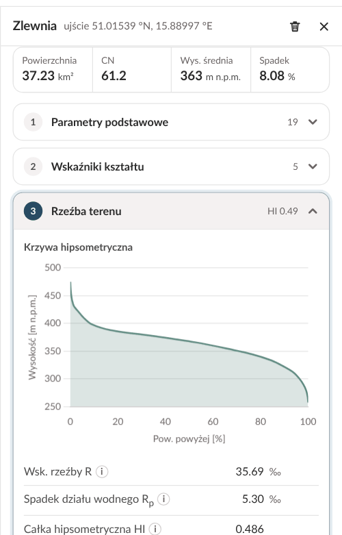
Dla każdej wysokości pokazuje, jaka część powierzchni zlewni leży wyżej (oś „Pow. powyżej [%]”). Pole pod krzywą to całka HI, podana też w nagłówku sekcji: im wyższa, tym więcej terenu wysoko nad ujściem.
Wsk. rzeźby R i Spadek działu wodnego Rp [‰]: deniwelacja zlewni odniesiona do pierwiastka z powierzchni i do obwodu.
Gęstość sieci Dd, Częstość cieków Fs, Liczba chropowatości Rn, Max rząd Strahlera, Pokrycie BDOT — z odcinków zgodnych z ciekami BDOT10k; bez nich „brak cieków BDOT”.
Słupki z udziałem klas pokrycia terenu (grunty orne, lasy, łąki i pastwiska, zabudowa, drogi, wody, inne) i grup glebowych A–D; sekcja HSG — tylko przy danych gleb.
04 · Zlewnia
Objaśnienia (i)
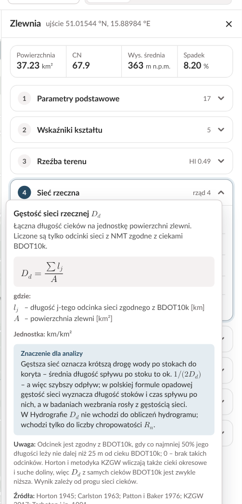
Przy wierszach parametrów, przy Qmax, tp, V i bilansie opadu, przy polach hietogramu i hydrogramu, przy wynikach analiz w panelu „Warstwy” oraz w „Sieci zlewni” — przy rodzajach zlewni i parametrach odcinka.
Kliknij (i) albo dojdź do niego klawiszem Tab i naciśnij Enter lub spację; na telefonie dotknij (i). Ponowne kliknięcie, kliknięcie obok lub Esc zamyka objaśnienie. Samo najechanie kursorem go nie otwiera.
Definicję z symbolem, wzór, „gdzie:” ze zmiennymi i jednostkami, „Jednostka:”, blok „Znaczenie dla analizy”, a w razie potrzeby „Zakres stosowalności”, „Uwaga:” i „Źródła:”.
Pod polami „Model UH”, „Metoda Tc” i „Estymacja Nash” zawsze widać „Zakres stosowalności” wybranej opcji.
05 · Opad i odpływ
Hietogram: scenariusz opadu PMAXTP
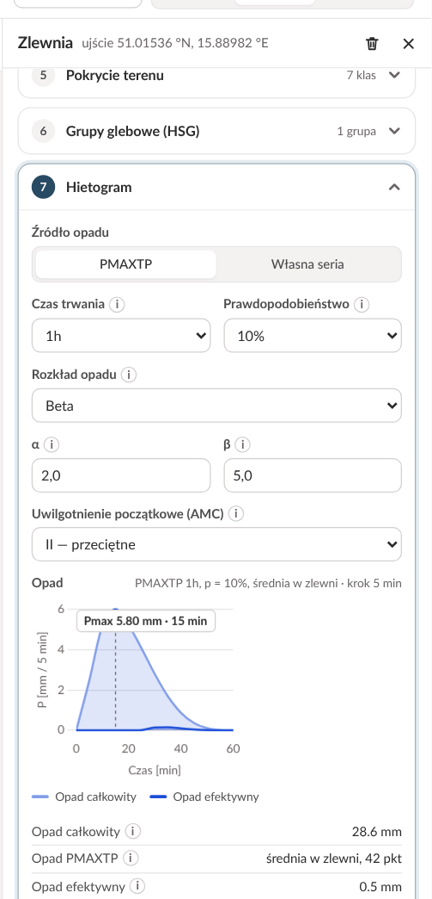
Suma opadu z atlasu PMAXTP (IMGW-PIB), średnia w zlewni z punktów siatki co 2 km ważonych wielobokami Thiessena. Czas trwania 5 min–72 h (domyślnie 24 h), prawdopodobieństwo 0,01–99,9 % (domyślnie 1 %); p = 1 % to okres powtarzalności 100 lat.
Podział sumy na kroki po 5 min: Beta (α, β; domyślnie szczyt w 0,2 czasu trwania), DVWK (Euler II) — szczyt w 1/3 czasu, Blokowy — stałe natężenie.
I — suche, II — przeciętne (domyślne), III — mokre. AMC przelicza CN zlewni, a z nim straty, opad efektywny i cały hydrogram.
Wykres „Opad” pokazuje opad całkowity i efektywny oraz szczyt Pmax. Pod nim bilans: sumy opadów, skąd opad PMAXTP (liczba punktów), wsp. odpływu, CN użyty (z AMC), S i Ia. „Eksport”: hietogram CSV lub JSON, punkty PMAXTP z wagami jako GeoJSON.
Każda zmiana pola przelicza hietogram i hydrogram po chwili — nie ma przycisku „Oblicz”. Pole „Współczynnik redukcji obszarowej (własny)” jest domyślnie puste (bez redukcji); wpisana wartość 0–1 mnoży opad PMAXTP.
05 · Opad i odpływ
Własna seria opadu zamiast PMAXTP
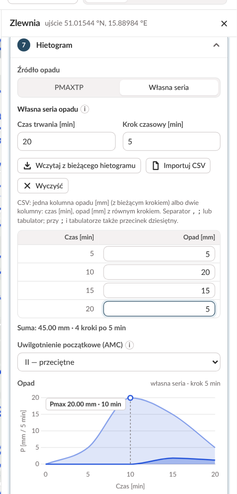
W „Hietogramie” wybierz „Własna seria”. Czas trwania i krok [min] tworzą tabelę: czas trwania to wielokrotność kroku, krok do 1440 min, najwyżej 2000 kroków. „Czas [min]” to koniec kroku.
W „Opad [mm]” wpisz wysokość opadu w kroku (≥ 0, suma > 0) — nie natężenie w mm/h. Kolumnę z arkusza wklejasz od wybranej komórki w dół.
Jedna kolumna — opad z bieżącym krokiem; dwie — czas [min] i opad [mm] w równych odstępach. Separator , ; lub tabulator; nagłówek jest pomijany; przy ; i tabulatorze działa przecinek dziesiętny.
„Wczytaj z bieżącego hietogramu” kopiuje ostatni hietogram PMAXTP, „Wyczyść” opróżnia tabelę. Seria dotyczy jednej zlewni — nowa zlewnia ją czyści.
Błąd, np. czas trwania niebędący wielokrotnością kroku albo ujemny opad w wierszu, pokazuje czerwony komunikat; do czasu poprawy hydrogram nie jest przeliczany.
05 · Krok po kroku
Własny opad z arkusza lub pliku CSV
Kolumna opadu w równych krokach — wysokość w kroku [mm], nie natężenie [mm/h]; w CSV opcjonalnie kolumna czasu [min].
Wyznacz zlewnię, w sekcji „Hietogram” wybierz „Własna seria” i ustaw „Krok czasowy [min]” jak w danych.
Kliknij pierwszą komórkę kolumny „Opad [mm]” i wklej dane (Ctrl+V) — czas trwania sam się wydłuży. Albo użyj „Importuj CSV”.
„Wklejono … wartości od wiersza 1…” i „Suma: … mm · … kroków po … min”. Czerwony komunikat powie, co poprawić.
Przeliczy się sam. To odpowiedź na to jedno zdarzenie — bez przypisanego prawdopodobieństwa.
Start od opadu projektowego: „Wczytaj z bieżącego hietogramu” kopiuje do tabeli ostatni hietogram PMAXTP tej zlewni — potem zmieniaj wartości.
05 · Opad i odpływ
Hydrogram: model, czas koncentracji, wynik
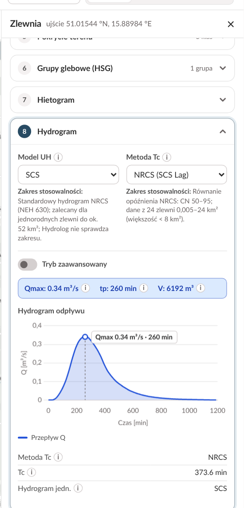
Hydrogram jednostkowy zamienia opad efektywny w przepływ: SCS (domyślny); Nash — kaskada zbiorników, „Estymacja Nash”: Lutz lub Regresja urban.; Snyder — z długości cieku i odległości Lc, ze współczynnikami Ct i Cp.
Czas koncentracji dla SCS: NRCS (SCS Lag), Kirpich, Giandotti, FAA (spływ pow.), Kerby, Kerby-Kirpich. Każdą liczy Hydrolog z danych, które podaje jej źródło, bez zastępników — najdłuższa droga spływu i jej spadek oraz spływ powierzchniowy pochodzą z wyznaczenia zlewni. FAA wymaga „C (spływ)” z tabeli FAA, obie metody Kerby’ego — „N (opór)” z tabeli Kerby’ego; pola są puste, dopóki ich nie wypełnisz. Snyder liczy własny czas opóźnienia z L i Lc — wybór metody Tc nie zmienia jego wyniku.
Qmax — przepływ maksymalny [m³/s], tp — czas do szczytu [min], V — objętość odpływu [m³]; wykres „Hydrogram odpływu” i tabela: Metoda Tc, Tc, Hydrogram jedn. (dla Nasha także N i K, a dla metody Lutza udział lasów W i terenów zurbanizowanych U z pokrycia terenu zlewni).
Pod wyborem: dla jakich zlewni powstała metoda (np. Kirpich — małe zlewnie rolnicze, Giandotti — duże). Aplikacja nie ostrzega o przekroczeniu zakresu — oceń to sam.
Hydrogram powstaje tylko dla zlewni do 250 km²; dla większych sekcje „Hietogram” i „Hydrogram” nie pojawiają się — bez komunikatu.
05 · Krok po kroku
Porównaj uwilgotnienie AMC
Wyznacz zlewnię do 250 km². W „Hietogramie” wybierz czas trwania, prawdopodobieństwo i rozkład — i nie zmieniaj ich do końca porównania.
Przy „II — przeciętne” zanotuj z bilansu „Opad efektywny” i „CN użyty”, a z sekcji „Hydrogram” — Qmax, tp i V.
Wybierz „I — suche”, potem „III — mokre”. Wyniki przeliczą się same — zanotuj te same wartości.
Mokra zlewnia (III): wyższy CN, mniejsza retencja S i mniejsze straty Ia, więcej opadu efektywnego, wyższe Qmax i V. Sucha (I) — odwrotnie.
Przy AMC I i niewielkim opadzie odpływ może wyjść zerowy — cały opad mieszczą straty początkowe Ia. CN dla AMC I i III jest zaokrąglany do liczby całkowitej.
To samo porównanie działa dla własnej serii opadu, a tryb zaawansowany pozwala osobno sprawdzić wpływ samego CN.
05 · Opad i odpływ
Tryb zaawansowany: własne dane wejściowe
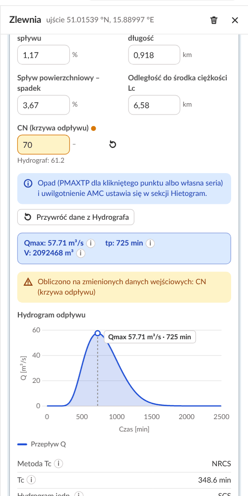
W sekcji „Hydrogram” włącz „Tryb zaawansowany”: 15 pól z wartościami zlewni (powierzchnia, obwód, długość, wysokości, spadki, ciek główny, najdłuższa droga spływu i jej spadek, spływ powierzchniowy — długość i spadek, odległość do środka ciężkości Lc, CN) z dokładnością wyników.
Wpisz własną wartość — hydrogram przeliczy się po chwili. Pole dostaje znacznik „zmieniono” i podpis „Hydrograf: …”, przy przełączniku pojawia się licznik „Zmienione: N”, a nad wykresem — lista zmian.
Strzałka przy polu cofa jedną zmianę, „Przywróć dane z Hydrografa” — wszystkie. Po wyłączeniu trybu wynik wraca do danych Hydrografa, a wpisy czekają na ponowne włączenie.
Przy błędnym polu pojawia się opis, np. „Wartość musi być dodatnia.” albo „CN: liczba od 1 do 100 (np. 68.4).” — do poprawy hydrogram nie jest przeliczany.
Zmiany dotyczą tylko hietogramu i hydrogramu, nie panelu parametrów. Gdy Snyder zgłasza „Model Snydera wymaga …”, wpisz tutaj Lc.
05 · Opad i odpływ
Przekazanie do Hydrologa
Pod sekcjami panelu „Zlewnia” jest część „Przekazanie do Hydrologa”. Opisuje, co przekaże: parametry zlewni, a gdy hydrogram jest obliczony — także opad, model i wynik.
„Kopiuj do Hydrologa” kładzie przekazanie (JSON nogat-handoff/1) do schowka, „Plik przekazania” pobiera je jako plik <nazwa>.handoff.json. Idzie to, co pokazuje panel, także zmiany trybu zaawansowanego.
W „Hydrogramie zlewni” Hydrologa: „Wczytaj z Hydrografa”, a w nim „Wklej ze schowka” albo „Plik przekazania…”. Opad PMAXTP otwiera się z punktem i wysokością z Hydrografa.
Hydrolog liczy hydrogram sam i stawia Qmax, czas do szczytu i objętość obok wyniku Hydrografa, z wersją Hydrologa, którą liczył każdy z nich.
Gdy przeglądarka nie daje dostępu do schowka (strona otwarta przez zwykłe HTTP), pojawia się pole z zaznaczonym tekstem przekazania: skopiuj go Ctrl+C. Czas koncentracji przechodzi jako liczba, bo Hydrograf liczy go po najdłuższej drodze spływu. Samą zlewnię, bez obliczonego hydrogramu, Hydrolog na razie odrzuca („nie ma opadu”). Całą sieć z „Wybierz zlewnię” → „Sieć zlewni” przekazują te same przyciski — slajd 28.
06 · Sieć zlewni
Sieć zlewni: przekrój zamykający, punkty, podgląd
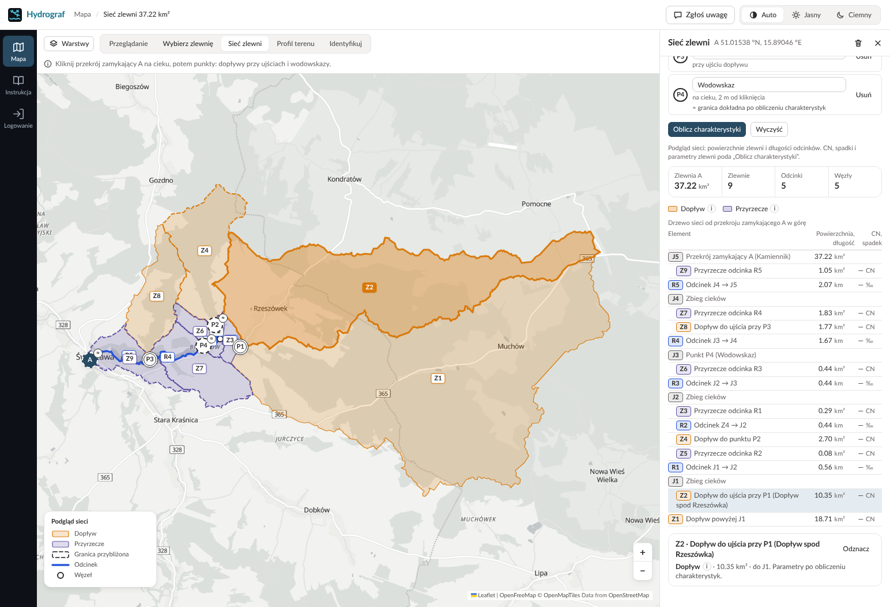
Na pasku włącz „Wybierz zlewnię”, a nad mapą — „Sieć zlewni”. Kliknięcia do 100 m od cieku trafią na linię spływu.
Pierwszy punkt zamyka całą sieć. W zbiegu dzieli zlewnię na cieki, które się tam łączą; sam wystarcza do obliczenia sieci.
Dodaj do 30 punktów powyżej, np. ujścia i wodowskazy. Tymczasowy numer P zmieni się po podglądzie; punkty przeciągniesz, nazwiesz lub usuniesz.
Po każdej zmianie znaczniki pokażą węzły J przy zbiegu i P poza nim, liczone od przekroju zamykającego w górę. Mapa i panel pokażą Z, R i węzły.
Drugi punkt w tym samym węźle blokuje podgląd — usuń go albo odsuń ponad 50 m od zbiegu. Punkt bliżej zbiegu jest węzłem J; poza nim — P. Zlewnie Z to dopływy i przyrzecza. Granica „≈” jest przybliżona; dokładną da „Oblicz charakterystyki”.
06 · Sieć zlewni
Charakterystyki sieci i przekazanie do Hydrologa
Wystarczy przekrój zamykający bez błędu podglądu; punkty powyżej niego są opcjonalne. Na mapie gruba granica „Zlewnia (całość)” obejmuje całą sieć. Panel podaje „Cała zlewnia”, liczbę zlewni, odcinków i węzłów, kontrolę „Suma elementów = zlewnia przekroju zamykającego” i „Drzewo sieci od przekroju zamykającego w górę”: węzły J i P (przekrój zamykający z powierzchnią całej zlewni; węzeł, który wpływa do innego bez odcinka, jako „J4 → J1”), zlewnie Z (Dopływ, Przyrzecze — każdy rodzaj z (i)) z powierzchnią i CN, odcinki R z długością i spadkiem [‰]. Każdą gałąź czyta się tak samo: przyrzecze, odcinek, węzeł wyżej; pod węzłem, wcięte o krok, idą cieki, które się w nim łączą, a potem rzeka główna na tym samym poziomie — gałąź jest cała, zanim zacznie się następna.
Kliknij etykietę na mapie (Z1, R1, …) albo wiersz drzewa, który też przybliża mapę. Zlewnia pokaże parametry w sekcjach jak w „Wybierz zlewnię”, bez hietogramu i hydrogramu; odcinek — długość, spadek, NMT na końcach i długość wzdłuż BDOT10k. W podglądzie — rodzaj, powierzchnię lub długość i węzeł poniżej. „Odznacz” zdejmuje wybór.
Przeciągnięcie, dodanie lub usunięcie punktu albo zmiana progu „Linii spływu” daje komunikat „Charakterystyki są nieaktualne…”: mapa i panel wracają do podglądu nowych punktów, a przekazanie jest wyłączone do ponownego „Oblicz charakterystyki”. Zmiana nazwy wyłącza tylko przekazanie. Gdy punkty wrócą, wrócą charakterystyki. „Wyczyść” usuwa punkty i sieć.
„Kopiuj do Hydrologa” albo „Plik przekazania” przekazują całą sieć z przekroju zamykającego do wylotu O w Hydrologu. W Hydrologu można dalej obliczać przepływ w węzłach i odcinkach; opis przekazania jest też w rozdziale „Opad i odpływ”.
Esc w „Sieci zlewni” tylko chowa panel — punkty i sieć zostają. „Jedna zlewnia” albo inny tryb zdejmuje sieć z mapy, powrót do „Sieci zlewni” ją przywraca; „Wybierz zlewnię” wraca do opcji wybranej ostatnio. Punkty, które serwer odrzucił, są zaznaczone na mapie i na liście.
07 · Krok po kroku
Odczytaj wynik SFINCS
W „Warstwach” zaznacz „Głębokość wody — SFINCS, opad 24 h, p = 1%”. W lewym dolnym rogu mapy pojawi się legenda.
Wyłącz inne warstwy i kliknij „Przybliż do zasięgu warstw” — mapa pokaże zasięg modelu, czyli zlewnię Kamiennika.
Kolor porównaj z legendą „Maks. głębokość wody [m]”. Zmniejsz krycie albo wybierz „Ortofotomapa ESRI”, by zobaczyć teren pod wodą.
Kliknij (i) przy nazwie warstwy: scenariusz, dane, ograniczenie i źródła. Na telefonie dotknij (i).
Włącz „Linie spływu” lub „Cieki BDOT10k”. Rozległe płytkie plamy na zboczach i małe głębokości w korytach to skutek ograniczenia z (i).
Traktuj mapę jako podgląd metody, nie zasięg zalewu. Jeśli coś wygląda nie tak — zgłoś uwagę.
Wynik wstępny: w niektórych miejscach, zwłaszcza w korycie i przy zaporze zbiornika Świerzawa, głębokości mogą być zaniżone. Ta warstwa nie służy do projektowania ani do oceny ryzyka dla konkretnych budynków.
07 · SFINCS w praktyce
Hydrogram a mapa SFINCS — dwa różne wyniki
| Hydrogram (Hydrograf) | Mapa głębokości (SFINCS) | |
|---|---|---|
| Co pokazuje | Przepływ w ujściu w czasie: Qmax, tp, V. | Największą głębokość wody w każdym miejscu zlewni. |
| Model | Hydrologiczny: straty SCS-CN i hydrogram jednostkowy (SCS, Nash, Snyder). | Hydrauliczny 2D: przepływ wody po siatce 5 m z NMT. |
| Czas | Cały przebieg fali: przepływ w kolejnych minutach. | Na mapie tylko maksimum z całej symulacji, bez przebiegu w czasie. |
| Zakres | Każda wyznaczona zlewnia do 250 km², liczony na żądanie. | Jedna zlewnia (Kamiennik) i jeden scenariusz, policzone raz poza aplikacją. |
| Dane wejściowe | Opad PMAXTP uśredniony w zlewni lub własna seria; CN z pokrycia terenu, przeliczany wg AMC. | Opad PMAXTP 24 h, p = 1%, model SFINCS; NMT, BDOT10k i HSG. Scenariusz modelu jest stały. |
| Status | Wersja rozwojowa — sprawdzaj „Zakres stosowalności”. | Wynik wstępny; możliwe niedoszacowanie głębokości m.in. w korytach i przy zaporze. |
Porównanie scenariuszy dla Kamiennika: zlewnię wyznacz przy ujściu do Kaczawy (ok. 51,0154°N, 15,8899°E; ok. 37 km²). PMAXTP 24 h, p = 1% w Hydrografie jest uśredniany dla zlewni; gotowa warstwa SFINCS przedstawia osobną symulację tego deszczu. Zestawiaj zasięg i czas, ale nie utożsamiaj punktowej głębokości z przepływem w ujściu.
08 · Profil terenu
Przekrój terenu wzdłuż linii
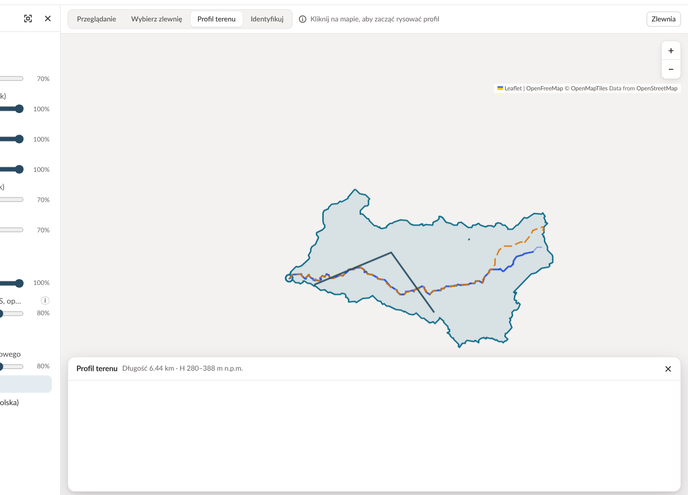
Na pasku nad mapą; pomaga warstwa „NMT (wysokości)”. Pojawi się pasek rysowania z licznikiem punktów.
Kliknięcie (dotknięcie) dodaje punkt; „Cofnij” lub Backspace usuwa ostatni, „Anuluj” lub Esc porzuca linię.
Kliknij lub dotknij ponownie ostatni punkt, kliknij dwukrotnie albo naciśnij „Rysuj profil” (min. 2 punkty). Szuflada pokaże długość, wysokości i wykres.
Najechanie na wykres wskaże miejsce na linii. Kliknięcie mapy zaczyna nową linię; × w szufladzie zamyka profil.
Wykres ma zawsze 100 punktów — przy długiej linii drobne formy terenu znikają. Część linii poza obszarem danych spada do 0 m; linia całkiem poza nim daje „Nie udało się pobrać profilu terenu”. Woda na wykresie: gdy w panelu „Warstwy” jest włączony wynik modelu (np. SFINCS), a linia przecina zalany teren, wykres pokaże wodę na niebiesko — do najwyższego poziomu z symulacji. Najechanie na wodę poda poziom wody i głębokość.
09 · Telefon i motyw
Na telefonie i po zmroku
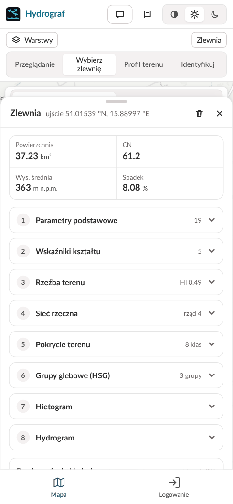
Przy szerokości do 860 px szyna nawigacji Mapa · Logowanie staje się dolnym paskiem. W górnym pasku pozostają ikony: „Zgłoś uwagę”, „Instrukcja” (okno powitalne) i przełącznik motywu.
„Warstwy” i „Zlewnia” (w „Sieci zlewni” — „Sieć”) wysuwają się od dołu, zawsze jeden naraz. Otwierają je przyciski na pasku nad mapą, zamyka uchwyt u góry arkusza; po wyznaczeniu zlewni arkusz „Zlewnia” otwiera się sam.
Przy 390 px cztery tryby mieszczą się nad mapą w dwóch wierszach. Podpowiedzi trybu są ukryte. Profil narysujesz, dotykając kolejnych punktów linii; sieć zlewni — wskazując przekrój zamykający i potem punkty powyżej.
Auto (jak w systemie), Jasny lub Ciemny — linie na mapie, legendy i wykresy zmieniają kolory razem z motywem. Przeglądarka zapamięta wybór, także dla administracji i tej instrukcji.
10 · Zgłoś uwagę
Jak przekazać uwagę?
Kliknij „Zgłoś uwagę” na górnym pasku strony z mapą; na telefonie to ikona dymka.
Miejsce na mapie, wykonane kroki, oczekiwany wynik i to, co się stało. Opis jest wymagany (do 5000 znaków), imię lub e-mail — nie.
„Dołącz dane diagnostyczne” (ostatnie akcje, błędy, parametry zapytań) jest zaznaczone; „Pokaż co zostanie wysłane” pokazuje treść. Możesz je odznaczyć.
Po „Wyślij” formularz się blokuje i pojawia się podziękowanie; okno zamknie się samo po 2 s, chyba że w nim klikasz lub piszesz. „Anuluj”, × lub Esc zamykają je bez wysyłania.
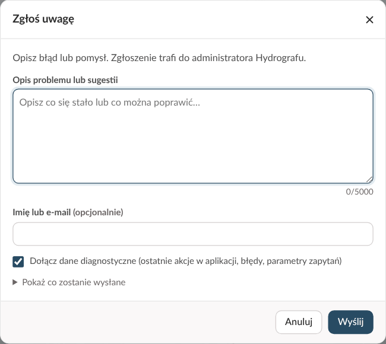